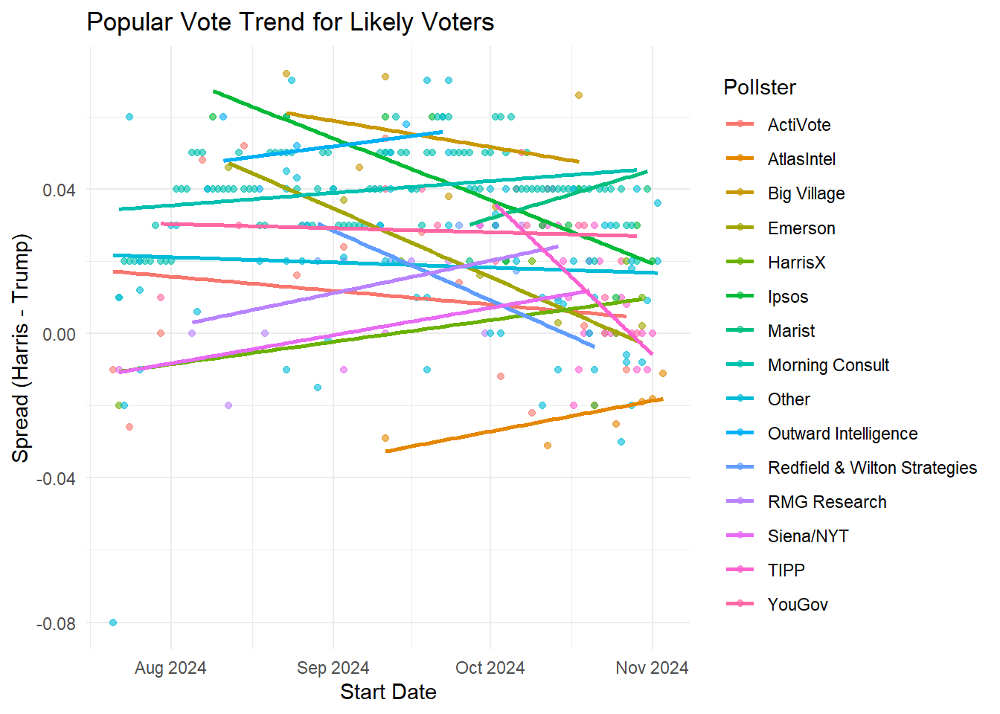
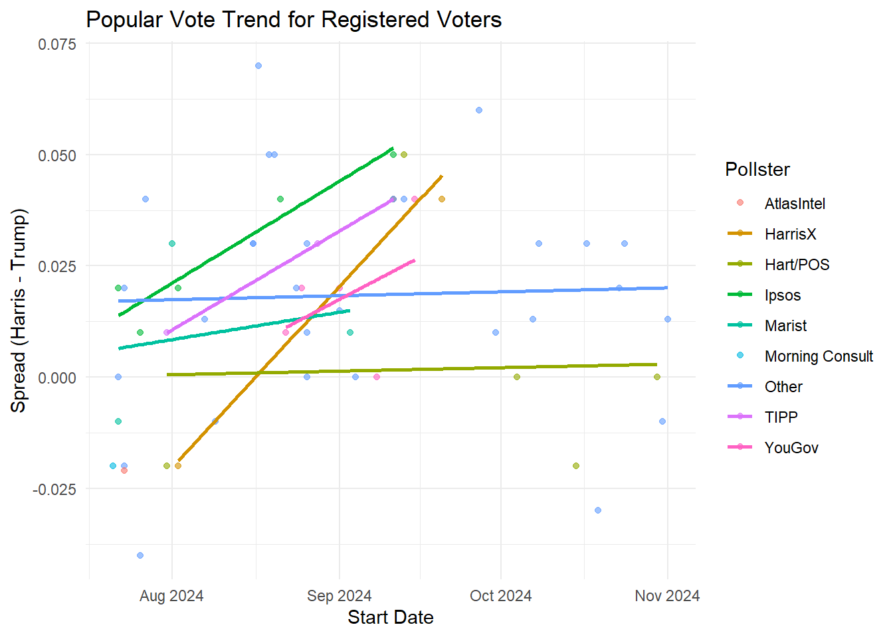
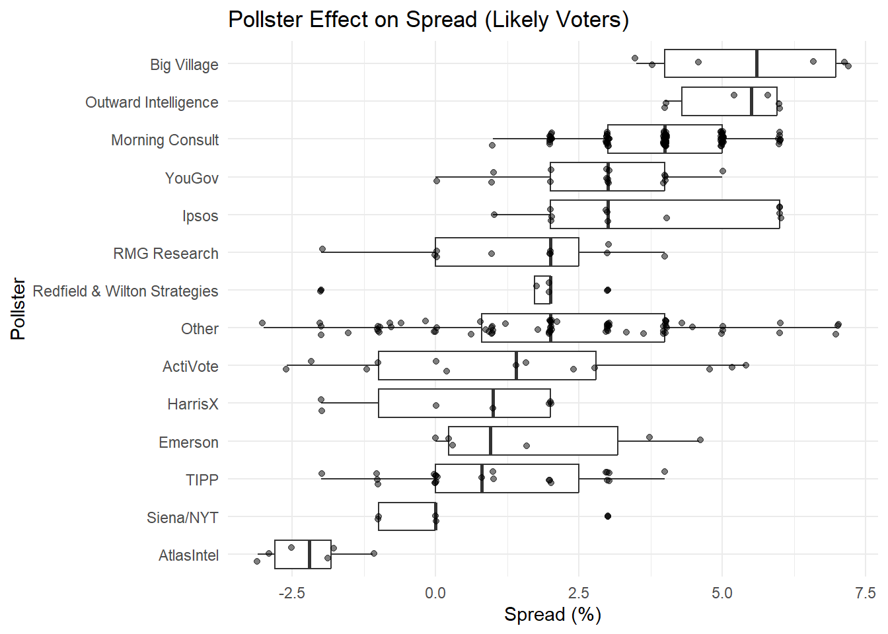
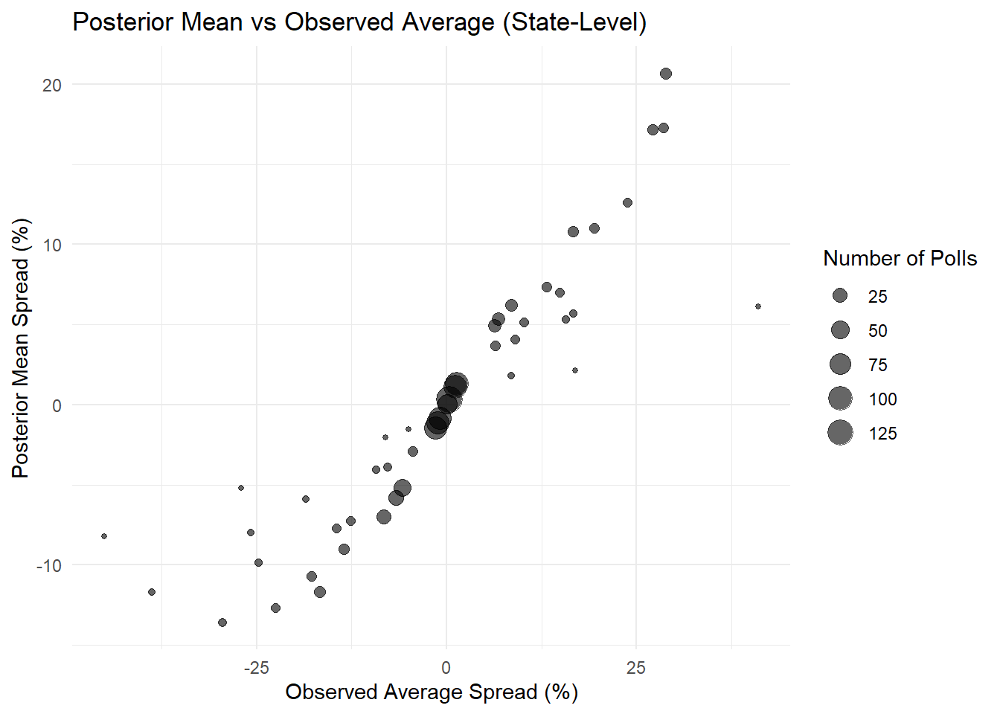

url <- "https://raw.githubusercontent.com/dmcable/BIOSTAT620/refs/heads/main/data/president_polls.csv"Problem set 6
For this problem set we want you to predict the 2024 election. You you will report a prediction of the number of electoral votes for Harris and an interval. You will do the same for the popular vote. You will compare your accuracy to the true results.
- Read in the data provided here:
Examine the data frame paying particular attention to the poll_id question_id, population, and candidate. Note that some polls have more than one question based on different population types.
library(tidyverse)── Attaching core tidyverse packages ──────────────────────── tidyverse 2.0.0 ──
✔ dplyr 1.1.4 ✔ readr 2.1.5
✔ forcats 1.0.0 ✔ stringr 1.5.1
✔ ggplot2 3.5.1 ✔ tibble 3.2.1
✔ lubridate 1.9.3 ✔ tidyr 1.3.1
✔ purrr 1.0.2
── Conflicts ────────────────────────────────────────── tidyverse_conflicts() ──
✖ dplyr::filter() masks stats::filter()
✖ dplyr::lag() masks stats::lag()
ℹ Use the conflicted package (<http://conflicted.r-lib.org/>) to force all conflicts to become errorslibrary(rvest)
Attaching package: 'rvest'
The following object is masked from 'package:readr':
guess_encoding# Read data from provided URL
url <- "https://raw.githubusercontent.com/dmcable/BIOSTAT620/refs/heads/main/data/president_polls.csv"
raw_dat <- read_csv(url)Rows: 18095 Columns: 52
── Column specification ────────────────────────────────────────────────────────
Delimiter: ","
chr (25): pollster, sponsors, display_name, pollster_rating_name, methodolog...
dbl (16): poll_id, pollster_id, pollster_rating_id, numeric_grade, pollscore...
num (1): sponsor_ids
lgl (10): endorsed_candidate_id, endorsed_candidate_name, endorsed_candidate...
ℹ Use `spec()` to retrieve the full column specification for this data.
ℹ Specify the column types or set `show_col_types = FALSE` to quiet this message.# Check first few rows
glimpse(raw_dat)Rows: 18,095
Columns: 52
$ poll_id <dbl> 89372, 89372, 89372, 89372, 89372, 89372, 89…
$ pollster_id <dbl> 1528, 1528, 1528, 1528, 1528, 1528, 1528, 15…
$ pollster <chr> "AtlasIntel", "AtlasIntel", "AtlasIntel", "A…
$ sponsor_ids <dbl> NA, NA, NA, NA, NA, NA, NA, NA, NA, NA, NA, …
$ sponsors <chr> NA, NA, NA, NA, NA, NA, NA, NA, NA, NA, NA, …
$ display_name <chr> "AtlasIntel", "AtlasIntel", "AtlasIntel", "A…
$ pollster_rating_id <dbl> 546, 546, 546, 546, 546, 546, 546, 546, 546,…
$ pollster_rating_name <chr> "AtlasIntel", "AtlasIntel", "AtlasIntel", "A…
$ numeric_grade <dbl> 2.7, 2.7, 2.7, 2.7, 2.7, 2.7, 2.7, 2.7, 2.7,…
$ pollscore <dbl> -0.8, -0.8, -0.8, -0.8, -0.8, -0.8, -0.8, -0…
$ methodology <chr> "Online Ad", "Online Ad", "Online Ad", "Onli…
$ transparency_score <dbl> 6, 6, 6, 6, 6, 6, 6, 6, 6, 6, 6, 6, 6, 6, 6,…
$ state <chr> NA, NA, NA, NA, NA, NA, NA, "Arizona", "Ariz…
$ start_date <chr> "11/3/24", "11/3/24", "11/3/24", "11/3/24", …
$ end_date <chr> "11/4/24", "11/4/24", "11/4/24", "11/4/24", …
$ sponsor_candidate_id <dbl> NA, NA, NA, NA, NA, NA, NA, NA, NA, NA, NA, …
$ sponsor_candidate <chr> NA, NA, NA, NA, NA, NA, NA, NA, NA, NA, NA, …
$ sponsor_candidate_party <chr> NA, NA, NA, NA, NA, NA, NA, NA, NA, NA, NA, …
$ endorsed_candidate_id <lgl> NA, NA, NA, NA, NA, NA, NA, NA, NA, NA, NA, …
$ endorsed_candidate_name <lgl> NA, NA, NA, NA, NA, NA, NA, NA, NA, NA, NA, …
$ endorsed_candidate_party <lgl> NA, NA, NA, NA, NA, NA, NA, NA, NA, NA, NA, …
$ question_id <dbl> 216453, 216453, 216453, 216453, 216453, 2164…
$ sample_size <dbl> 2703, 2703, 2703, 2703, 2703, 2703, 2703, 87…
$ population <chr> "lv", "lv", "lv", "lv", "lv", "lv", "lv", "l…
$ subpopulation <lgl> NA, NA, NA, NA, NA, NA, NA, NA, NA, NA, NA, …
$ population_full <chr> "lv", "lv", "lv", "lv", "lv", "lv", "lv", "l…
$ tracking <lgl> NA, NA, NA, NA, NA, NA, NA, NA, NA, NA, NA, …
$ created_at <chr> "11/4/24 19:06", "11/4/24 19:06", "11/4/24 1…
$ notes <chr> NA, NA, NA, NA, NA, NA, NA, NA, NA, NA, NA, …
$ url <chr> "https://atlasintel.org/poll/usa-national-20…
$ url_article <chr> "https://atlasintel.org/poll/usa-national-20…
$ url_topline <chr> NA, NA, NA, NA, NA, NA, NA, NA, NA, NA, NA, …
$ url_crosstab <chr> "https://cdn.atlasintel.org/f1cec70d-8eae-44…
$ source <dbl> NA, NA, NA, NA, NA, NA, NA, NA, NA, NA, NA, …
$ internal <lgl> NA, NA, NA, NA, NA, NA, NA, NA, NA, NA, NA, …
$ partisan <chr> NA, NA, NA, NA, NA, NA, NA, NA, NA, NA, NA, …
$ race_id <dbl> 8914, 8914, 8914, 8914, 8914, 8914, 8914, 87…
$ cycle <dbl> 2024, 2024, 2024, 2024, 2024, 2024, 2024, 20…
$ office_type <chr> "U.S. President", "U.S. President", "U.S. Pr…
$ seat_number <dbl> 0, 0, 0, 0, 0, 0, 0, 0, 0, 0, 0, 0, 0, 0, 0,…
$ seat_name <lgl> NA, NA, NA, NA, NA, NA, NA, NA, NA, NA, NA, …
$ election_date <chr> "11/5/24", "11/5/24", "11/5/24", "11/5/24", …
$ stage <chr> "general", "general", "general", "general", …
$ nationwide_batch <lgl> FALSE, FALSE, FALSE, FALSE, FALSE, FALSE, FA…
$ ranked_choice_reallocated <lgl> FALSE, FALSE, FALSE, FALSE, FALSE, FALSE, FA…
$ ranked_choice_round <dbl> NA, NA, NA, NA, NA, NA, NA, NA, NA, NA, NA, …
$ hypothetical <lgl> FALSE, FALSE, FALSE, FALSE, FALSE, FALSE, FA…
$ party <chr> "DEM", "REP", "GRE", "IND", "LIB", "DEM", "R…
$ answer <chr> "Harris", "Trump", "Stein", "West", "Oliver"…
$ candidate_id <dbl> 16661, 16651, 31116, 31097, 31790, 16661, 16…
$ candidate_name <chr> "Kamala Harris", "Donald Trump", "Jill Stein…
$ pct <dbl> 48.1, 49.2, 1.1, 0.3, 0.1, 48.8, 50.0, 45.9,…raw_dat %>%
count(candidate_name, sort = TRUE)# A tibble: 64 × 2
candidate_name n
<chr> <int>
1 Donald Trump 5973
2 Joe Biden 3883
3 Kamala Harris 2652
4 Jill Stein 1379
5 Robert F. Kennedy 1346
6 Cornel West 952
7 Chase Oliver 827
8 Ron DeSantis 466
9 Nikki Haley 152
10 Lars Mapstead 59
# ℹ 54 more rowsraw_dat %>%
count(population, sort = TRUE)# A tibble: 5 × 2
population n
<chr> <int>
1 lv 8541
2 rv 8481
3 a 1040
4 v 29
5 <NA> 4- Polls are based on either likely voters (lv), registered voters (rv), all voters (a), or voters (v). Polls based on ‘voters’ are exit polls. We want to remove these because exit polls are too old or might be biased due to differences in the likelihood of early voter by party. We prefer likely voter (lv) polls because they are more predictive. Registered voter polls are more predictive than all voter (a) polls. Remove the exit poll (v) polls and then redefine
populationto be a factor ordered from best to worse predictive power: (lv, rv, a). You should also remove hypothetical polls and make the date columns into date objects. Name the resulting data framedat.
dat <- raw_dat %>%
filter(population != "v") %>%
# Remove hypothetical polls
filter(!hypothetical) %>%
# Convert date columns and set population as an ordered factor
mutate(
start_date = as.Date(start_date, format = "%m/%d/%y"),
end_date = as.Date(end_date, format = "%m/%d/%y"),
population = factor(population, levels = c("lv", "rv", "a"), ordered = TRUE)
)
glimpse(dat)Rows: 5,611
Columns: 52
$ poll_id <dbl> 89372, 89372, 89372, 89372, 89372, 89372, 89…
$ pollster_id <dbl> 1528, 1528, 1528, 1528, 1528, 1528, 1528, 15…
$ pollster <chr> "AtlasIntel", "AtlasIntel", "AtlasIntel", "A…
$ sponsor_ids <dbl> NA, NA, NA, NA, NA, NA, NA, NA, NA, NA, NA, …
$ sponsors <chr> NA, NA, NA, NA, NA, NA, NA, NA, NA, NA, NA, …
$ display_name <chr> "AtlasIntel", "AtlasIntel", "AtlasIntel", "A…
$ pollster_rating_id <dbl> 546, 546, 546, 546, 546, 546, 546, 546, 546,…
$ pollster_rating_name <chr> "AtlasIntel", "AtlasIntel", "AtlasIntel", "A…
$ numeric_grade <dbl> 2.7, 2.7, 2.7, 2.7, 2.7, 2.7, 2.7, 2.7, 2.7,…
$ pollscore <dbl> -0.8, -0.8, -0.8, -0.8, -0.8, -0.8, -0.8, -0…
$ methodology <chr> "Online Ad", "Online Ad", "Online Ad", "Onli…
$ transparency_score <dbl> 6, 6, 6, 6, 6, 6, 6, 6, 6, 6, 6, 6, 6, 6, 6,…
$ state <chr> NA, NA, NA, NA, NA, NA, NA, "Arizona", "Ariz…
$ start_date <date> 2024-11-03, 2024-11-03, 2024-11-03, 2024-11…
$ end_date <date> 2024-11-04, 2024-11-04, 2024-11-04, 2024-11…
$ sponsor_candidate_id <dbl> NA, NA, NA, NA, NA, NA, NA, NA, NA, NA, NA, …
$ sponsor_candidate <chr> NA, NA, NA, NA, NA, NA, NA, NA, NA, NA, NA, …
$ sponsor_candidate_party <chr> NA, NA, NA, NA, NA, NA, NA, NA, NA, NA, NA, …
$ endorsed_candidate_id <lgl> NA, NA, NA, NA, NA, NA, NA, NA, NA, NA, NA, …
$ endorsed_candidate_name <lgl> NA, NA, NA, NA, NA, NA, NA, NA, NA, NA, NA, …
$ endorsed_candidate_party <lgl> NA, NA, NA, NA, NA, NA, NA, NA, NA, NA, NA, …
$ question_id <dbl> 216453, 216453, 216453, 216453, 216453, 2164…
$ sample_size <dbl> 2703, 2703, 2703, 2703, 2703, 2703, 2703, 87…
$ population <ord> lv, lv, lv, lv, lv, lv, lv, lv, lv, lv, lv, …
$ subpopulation <lgl> NA, NA, NA, NA, NA, NA, NA, NA, NA, NA, NA, …
$ population_full <chr> "lv", "lv", "lv", "lv", "lv", "lv", "lv", "l…
$ tracking <lgl> NA, NA, NA, NA, NA, NA, NA, NA, NA, NA, NA, …
$ created_at <chr> "11/4/24 19:06", "11/4/24 19:06", "11/4/24 1…
$ notes <chr> NA, NA, NA, NA, NA, NA, NA, NA, NA, NA, NA, …
$ url <chr> "https://atlasintel.org/poll/usa-national-20…
$ url_article <chr> "https://atlasintel.org/poll/usa-national-20…
$ url_topline <chr> NA, NA, NA, NA, NA, NA, NA, NA, NA, NA, NA, …
$ url_crosstab <chr> "https://cdn.atlasintel.org/f1cec70d-8eae-44…
$ source <dbl> NA, NA, NA, NA, NA, NA, NA, NA, NA, NA, NA, …
$ internal <lgl> NA, NA, NA, NA, NA, NA, NA, NA, NA, NA, NA, …
$ partisan <chr> NA, NA, NA, NA, NA, NA, NA, NA, NA, NA, NA, …
$ race_id <dbl> 8914, 8914, 8914, 8914, 8914, 8914, 8914, 87…
$ cycle <dbl> 2024, 2024, 2024, 2024, 2024, 2024, 2024, 20…
$ office_type <chr> "U.S. President", "U.S. President", "U.S. Pr…
$ seat_number <dbl> 0, 0, 0, 0, 0, 0, 0, 0, 0, 0, 0, 0, 0, 0, 0,…
$ seat_name <lgl> NA, NA, NA, NA, NA, NA, NA, NA, NA, NA, NA, …
$ election_date <chr> "11/5/24", "11/5/24", "11/5/24", "11/5/24", …
$ stage <chr> "general", "general", "general", "general", …
$ nationwide_batch <lgl> FALSE, FALSE, FALSE, FALSE, FALSE, FALSE, FA…
$ ranked_choice_reallocated <lgl> FALSE, FALSE, FALSE, FALSE, FALSE, FALSE, FA…
$ ranked_choice_round <dbl> NA, NA, NA, NA, NA, NA, NA, NA, NA, NA, NA, …
$ hypothetical <lgl> FALSE, FALSE, FALSE, FALSE, FALSE, FALSE, FA…
$ party <chr> "DEM", "REP", "GRE", "IND", "LIB", "DEM", "R…
$ answer <chr> "Harris", "Trump", "Stein", "West", "Oliver"…
$ candidate_id <dbl> 16661, 16651, 31116, 31097, 31790, 16661, 16…
$ candidate_name <chr> "Kamala Harris", "Donald Trump", "Jill Stein…
$ pct <dbl> 48.1, 49.2, 1.1, 0.3, 0.1, 48.8, 50.0, 45.9,…- Some polls asked more than one questions. So if you filter to one poll ID in our dataset, you might see more than one question ID associated with the same poll. The most common reason for this is that they asked a head-to-head question (Harris versus Trump) and, in the same poll, a question about all candidates. We want to prioritize the head-to-head questions.
Add a column that tells us, for each question, how many candidates where mentioned in that question.
Add a new column n to dat that provides the number of candidates mentioned for each question. For example the relevant column of your final table will looks something like this:
poll_id |
question_id |
candidate |
n |
|---|---|---|---|
| 1 | 1 | Harris | 2 |
| 1 | 1 | Trump | 2 |
| 1 | 2 | Harris | 3 |
| 1 | 2 | Trump | 3 |
| 1 | 2 | Stein | 3 |
library(dplyr)
dat <- dat %>%
group_by(poll_id, question_id) %>%
mutate(n = n()) %>%
ungroup()
glimpse(dat)Rows: 5,611
Columns: 53
$ poll_id <dbl> 89372, 89372, 89372, 89372, 89372, 89372, 89…
$ pollster_id <dbl> 1528, 1528, 1528, 1528, 1528, 1528, 1528, 15…
$ pollster <chr> "AtlasIntel", "AtlasIntel", "AtlasIntel", "A…
$ sponsor_ids <dbl> NA, NA, NA, NA, NA, NA, NA, NA, NA, NA, NA, …
$ sponsors <chr> NA, NA, NA, NA, NA, NA, NA, NA, NA, NA, NA, …
$ display_name <chr> "AtlasIntel", "AtlasIntel", "AtlasIntel", "A…
$ pollster_rating_id <dbl> 546, 546, 546, 546, 546, 546, 546, 546, 546,…
$ pollster_rating_name <chr> "AtlasIntel", "AtlasIntel", "AtlasIntel", "A…
$ numeric_grade <dbl> 2.7, 2.7, 2.7, 2.7, 2.7, 2.7, 2.7, 2.7, 2.7,…
$ pollscore <dbl> -0.8, -0.8, -0.8, -0.8, -0.8, -0.8, -0.8, -0…
$ methodology <chr> "Online Ad", "Online Ad", "Online Ad", "Onli…
$ transparency_score <dbl> 6, 6, 6, 6, 6, 6, 6, 6, 6, 6, 6, 6, 6, 6, 6,…
$ state <chr> NA, NA, NA, NA, NA, NA, NA, "Arizona", "Ariz…
$ start_date <date> 2024-11-03, 2024-11-03, 2024-11-03, 2024-11…
$ end_date <date> 2024-11-04, 2024-11-04, 2024-11-04, 2024-11…
$ sponsor_candidate_id <dbl> NA, NA, NA, NA, NA, NA, NA, NA, NA, NA, NA, …
$ sponsor_candidate <chr> NA, NA, NA, NA, NA, NA, NA, NA, NA, NA, NA, …
$ sponsor_candidate_party <chr> NA, NA, NA, NA, NA, NA, NA, NA, NA, NA, NA, …
$ endorsed_candidate_id <lgl> NA, NA, NA, NA, NA, NA, NA, NA, NA, NA, NA, …
$ endorsed_candidate_name <lgl> NA, NA, NA, NA, NA, NA, NA, NA, NA, NA, NA, …
$ endorsed_candidate_party <lgl> NA, NA, NA, NA, NA, NA, NA, NA, NA, NA, NA, …
$ question_id <dbl> 216453, 216453, 216453, 216453, 216453, 2164…
$ sample_size <dbl> 2703, 2703, 2703, 2703, 2703, 2703, 2703, 87…
$ population <ord> lv, lv, lv, lv, lv, lv, lv, lv, lv, lv, lv, …
$ subpopulation <lgl> NA, NA, NA, NA, NA, NA, NA, NA, NA, NA, NA, …
$ population_full <chr> "lv", "lv", "lv", "lv", "lv", "lv", "lv", "l…
$ tracking <lgl> NA, NA, NA, NA, NA, NA, NA, NA, NA, NA, NA, …
$ created_at <chr> "11/4/24 19:06", "11/4/24 19:06", "11/4/24 1…
$ notes <chr> NA, NA, NA, NA, NA, NA, NA, NA, NA, NA, NA, …
$ url <chr> "https://atlasintel.org/poll/usa-national-20…
$ url_article <chr> "https://atlasintel.org/poll/usa-national-20…
$ url_topline <chr> NA, NA, NA, NA, NA, NA, NA, NA, NA, NA, NA, …
$ url_crosstab <chr> "https://cdn.atlasintel.org/f1cec70d-8eae-44…
$ source <dbl> NA, NA, NA, NA, NA, NA, NA, NA, NA, NA, NA, …
$ internal <lgl> NA, NA, NA, NA, NA, NA, NA, NA, NA, NA, NA, …
$ partisan <chr> NA, NA, NA, NA, NA, NA, NA, NA, NA, NA, NA, …
$ race_id <dbl> 8914, 8914, 8914, 8914, 8914, 8914, 8914, 87…
$ cycle <dbl> 2024, 2024, 2024, 2024, 2024, 2024, 2024, 20…
$ office_type <chr> "U.S. President", "U.S. President", "U.S. Pr…
$ seat_number <dbl> 0, 0, 0, 0, 0, 0, 0, 0, 0, 0, 0, 0, 0, 0, 0,…
$ seat_name <lgl> NA, NA, NA, NA, NA, NA, NA, NA, NA, NA, NA, …
$ election_date <chr> "11/5/24", "11/5/24", "11/5/24", "11/5/24", …
$ stage <chr> "general", "general", "general", "general", …
$ nationwide_batch <lgl> FALSE, FALSE, FALSE, FALSE, FALSE, FALSE, FA…
$ ranked_choice_reallocated <lgl> FALSE, FALSE, FALSE, FALSE, FALSE, FALSE, FA…
$ ranked_choice_round <dbl> NA, NA, NA, NA, NA, NA, NA, NA, NA, NA, NA, …
$ hypothetical <lgl> FALSE, FALSE, FALSE, FALSE, FALSE, FALSE, FA…
$ party <chr> "DEM", "REP", "GRE", "IND", "LIB", "DEM", "R…
$ answer <chr> "Harris", "Trump", "Stein", "West", "Oliver"…
$ candidate_id <dbl> 16661, 16651, 31116, 31097, 31790, 16661, 16…
$ candidate_name <chr> "Kamala Harris", "Donald Trump", "Jill Stein…
$ pct <dbl> 48.1, 49.2, 1.1, 0.3, 0.1, 48.8, 50.0, 45.9,…
$ n <int> 5, 5, 5, 5, 5, 2, 2, 4, 4, 4, 4, 2, 2, 4, 4,…- We are going to focus on the Harris versus Trump comparison. Redefine
datto only include the rows providing information for Harris and Trump. Then pivot the dataset so that the percentages for Harris and Trump are in their own columns. Note that for pivot to work you will have to remove some columns. To avoid this keep only the columns you are pivoting and along withpoll_id,question_id,state,pollster,start_date,end_date,numeric_grade,sample_size. Once you accomplish the pivot, add a column calledspreadwith the difference between Harris and Trump.
Note that the values stored in spread are estimates of the popular vote difference that we will use to predict:
spread = % of the popular vote for Harris - % of the popular vote for Trump
However, for the calculations in the rest of problem set to be consistent with the sampling model we have been discussing in class, save spread as a proportion, not a percentage. But remember to turn it back to a percentage when reporting your answer.
library(tidyverse)
dat <- dat %>%
filter(candidate_name %in% c("Kamala Harris", "Donald Trump")) %>%
# Select relevant columns
select(
poll_id, question_id, state, pollster, start_date, end_date,
numeric_grade, sample_size, population, candidate_name, pct, n
) %>%
# Convert candidate names into separate columns
pivot_wider(names_from = candidate_name, values_from = pct) %>%
# Compute the spread (percentage point difference between Harris and Trump)
mutate(spread = (`Kamala Harris` - `Donald Trump`) / 100)
glimpse(dat)Rows: 2,189
Columns: 13
$ poll_id <dbl> 89372, 89372, 89373, 89373, 89374, 89374, 89375, 89375…
$ question_id <dbl> 216453, 216454, 216464, 216465, 216466, 216467, 216468…
$ state <chr> NA, NA, "Arizona", "Arizona", "Georgia", "Georgia", "M…
$ pollster <chr> "AtlasIntel", "AtlasIntel", "AtlasIntel", "AtlasIntel"…
$ start_date <date> 2024-11-03, 2024-11-03, 2024-11-03, 2024-11-03, 2024-…
$ end_date <date> 2024-11-04, 2024-11-04, 2024-11-04, 2024-11-04, 2024-…
$ numeric_grade <dbl> 2.7, 2.7, 2.7, 2.7, 2.7, 2.7, 2.7, 2.7, 2.7, 2.7, 2.7,…
$ sample_size <dbl> 2703, 2703, 875, 875, 1112, 1112, 1113, 1113, 707, 707…
$ population <ord> lv, lv, lv, lv, lv, lv, lv, lv, lv, lv, lv, lv, lv, lv…
$ n <int> 5, 2, 4, 2, 4, 2, 4, 2, 2, 2, 4, 2, 4, 2, 4, 2, 2, 4, …
$ `Kamala Harris` <dbl> 48.10, 48.80, 45.90, 46.50, 48.20, 48.30, 47.80, 48.30…
$ `Donald Trump` <dbl> 49.20, 50.00, 51.00, 51.60, 48.20, 49.90, 49.60, 49.80…
$ spread <dbl> -0.011, -0.012, -0.051, -0.051, 0.000, -0.016, -0.018,…- Note that some polls have multiple questions. We want to keep only one question per poll. We will keep likely voter (lv) polls when available, and prefer register voter (rv) over all voter polls (a). If more than one question was asked in one poll, take the most targeted question (smallest
n). Save the resulting tabledat. Note that now each after you do this each row will represents exactly one poll/question, so can removen,poll_idandquestion_id.
library(dplyr)
if (!"population" %in% colnames(dat)) {
dat <- dat |>
left_join(select(population_dat, poll_id, question_id, population),
by = c("poll_id", "question_id"))
}
dat <- dat |>
arrange(poll_id, question_id) |>
group_by(poll_id) |>
mutate(priority = case_when(
population == "lv" ~ 1,
population == "rv" ~ 2,
population == "a" ~ 3,
TRUE ~ 4
)) |>
filter(priority == min(priority, na.rm = TRUE)) |>
filter(question_id == min(question_id, na.rm = TRUE)) |>
ungroup()
if ("priority" %in% colnames(dat)) {
dat <- dat |> select(-priority)
}
glimpse(dat)Rows: 1,516
Columns: 13
$ poll_id <dbl> 74819, 74995, 74998, 75491, 76285, 76441, 76752, 76905…
$ question_id <dbl> 142439, 142927, 142946, 144007, 145354, 145617, 146302…
$ state <chr> NA, NA, NA, NA, NA, NA, "Florida", NA, NA, NA, NA, NA,…
$ pollster <chr> "McLaughlin", "Echelon Insights", "McLaughlin", "McLau…
$ start_date <date> 2021-05-12, 2021-06-18, 2021-06-16, 2021-07-29, 2021-…
$ end_date <date> 2021-05-18, 2021-06-22, 2021-06-20, 2021-08-03, 2021-…
$ numeric_grade <dbl> 0.5, 2.7, 0.5, 0.5, 0.5, 2.1, 1.3, 0.5, 1.8, 0.5, 1.5,…
$ sample_size <dbl> 1000, 1001, 1000, 1000, 1000, 1000, 450, 1000, 1500, 1…
$ population <ord> lv, rv, lv, lv, lv, lv, lv, lv, rv, lv, rv, lv, lv, lv…
$ n <int> 2, 2, 2, 2, 2, 2, 2, 2, 2, 2, 2, 2, 2, 2, 2, 2, 2, 2, …
$ `Kamala Harris` <dbl> 45.0, 47.0, 45.0, 46.0, 47.0, 39.0, 50.7, 46.0, 33.0, …
$ `Donald Trump` <dbl> 49.0, 40.0, 49.0, 49.0, 49.0, 52.0, 49.3, 49.0, 42.0, …
$ spread <dbl> -0.040, 0.070, -0.040, -0.030, -0.020, -0.130, 0.014, …- Separate
datinto two data frames: one with popular vote polls and one with state level polls. Call thempopular_voteandpollsrespectively.
library(dplyr)
popular_vote <- dat |>
filter(is.na(state))
polls <- dat |>
filter(!is.na(state))
glimpse(popular_vote)Rows: 484
Columns: 13
$ poll_id <dbl> 74819, 74995, 74998, 75491, 76285, 76441, 76905, 77744…
$ question_id <dbl> 142439, 142927, 142946, 144007, 145354, 145617, 146596…
$ state <chr> NA, NA, NA, NA, NA, NA, NA, NA, NA, NA, NA, NA, NA, NA…
$ pollster <chr> "McLaughlin", "Echelon Insights", "McLaughlin", "McLau…
$ start_date <date> 2021-05-12, 2021-06-18, 2021-06-16, 2021-07-29, 2021-…
$ end_date <date> 2021-05-18, 2021-06-22, 2021-06-20, 2021-08-03, 2021-…
$ numeric_grade <dbl> 0.5, 2.7, 0.5, 0.5, 0.5, 2.1, 0.5, 1.8, 0.5, 1.5, 1.8,…
$ sample_size <dbl> 1000, 1001, 1000, 1000, 1000, 1000, 1000, 1500, 1000, …
$ population <ord> lv, rv, lv, lv, lv, lv, lv, rv, lv, rv, lv, lv, lv, rv…
$ n <int> 2, 2, 2, 2, 2, 2, 2, 2, 2, 2, 2, 2, 2, 2, 2, 2, 2, 2, …
$ `Kamala Harris` <dbl> 45, 47, 45, 46, 47, 39, 46, 33, 42, 41, 38, 41, 40, 39…
$ `Donald Trump` <dbl> 49, 40, 49, 49, 49, 52, 49, 42, 50, 50, 42, 41, 51, 49…
$ spread <dbl> -0.04, 0.07, -0.04, -0.03, -0.02, -0.13, -0.03, -0.09,…glimpse(polls)Rows: 1,032
Columns: 13
$ poll_id <dbl> 76752, 78084, 80715, 82878, 83215, 84542, 84543, 84544…
$ question_id <dbl> 146302, 151135, 161813, 173613, 175598, 184809, 184810…
$ state <chr> "Florida", "New Hampshire", "Florida", "Texas", "New H…
$ pollster <chr> "Victory Insights", "Trafalgar Group", "Suffolk", "Tex…
$ start_date <date> 2021-09-16, 2021-12-10, 2022-09-15, 2023-05-08, 2023-…
$ end_date <date> 2021-09-18, 2021-12-12, 2022-09-18, 2023-05-17, 2023-…
$ numeric_grade <dbl> 1.3, 0.7, 2.9, NA, NA, 3.0, 3.0, 3.0, 3.0, 3.0, 3.0, 2…
$ sample_size <dbl> 450, 1041, 500, 1000, 895, 603, 629, 616, 611, 600, 60…
$ population <ord> lv, lv, lv, rv, lv, lv, lv, lv, lv, lv, lv, rv, lv, rv…
$ n <int> 2, 2, 2, 2, 2, 2, 2, 2, 2, 2, 2, 2, 2, 2, 2, 2, 2, 2, …
$ `Kamala Harris` <dbl> 50.7, 46.0, 44.4, 39.0, NA, 43.0, 44.0, 48.0, 42.0, 44…
$ `Donald Trump` <dbl> 49.3, 47.8, 45.6, 46.0, 32.9, 48.0, 47.0, 46.0, 50.0, …
$ spread <dbl> 0.014, -0.018, -0.012, -0.070, NA, -0.050, -0.030, 0.0…- For the popular vote, plot the spread reported by each poll against start date for polls starting after July 21, 2024. Rename all the pollsters with less than 5 polls during this period as
Other. Use color to denote pollster. Make separate plots for likely voters and registered voters. Do not use all voter polls (a). Usegeom_smoothwith methodloessto show a curve going through the points. You can change how adaptive the curve is to that through thespanargument.
library(ggplot2)
library(lubridate)
popular_vote_filtered <- popular_vote |>
filter(start_date >= make_date(2024, 7, 21) & population != "a") |>
group_by(pollster) |>
mutate(pollster = ifelse(n() < 5, "Other", pollster)) |>
ungroup()
popular_vote_filtered <- popular_vote_filtered |>
mutate(start_date = as.Date(start_date)) |>
filter(!is.na(start_date))
popular_vote_filtered <- popular_vote_filtered |>
filter(!is.na(spread) & is.finite(spread)) |>
filter(spread > -30 & spread < 30)
ggplot(popular_vote_filtered |> filter(population == "lv"),
aes(x = start_date, y = spread, color = pollster)) +
geom_point(alpha = 0.6) +
geom_smooth(method = "lm", formula = y ~ x, se = FALSE) +
scale_x_date(date_labels = "%b %Y") +
labs(title = "Popular Vote Trend for Likely Voters",
x = "Start Date", y = "Spread (Harris - Trump)",
color = "Pollster") +
theme_minimal()
ggplot(popular_vote_filtered |> filter(population == "rv"),
aes(x = start_date, y = spread, color = pollster)) +
geom_point(alpha = 0.6) +
geom_smooth(method = "lm", formula = y ~ x, se = FALSE) +
scale_x_date(date_labels = "%b %Y") +
labs(title = "Popular Vote Trend for Registered Voters",
x = "Start Date", y = "Spread (Harris - Trump)",
color = "Pollster") +
theme_minimal()
- To show the pollster effect, make boxplots for the the spread for each popular vote poll. Include only likely voter polls starting after July 21, 2024. Rename all the pollsters with less than 5 polls during that time period as
Other.
library(ggplot2)
library(lubridate)
# Filter for likely voter polls after July 21, 2024
popular_vote_filtered <- popular_vote %>%
filter(start_date > make_date(2024, 7, 21) & population == "lv") %>%
group_by(pollster) %>%
mutate(n_pollster = n()) %>%
ungroup() %>%
mutate(pollster = if_else(n_pollster < 5, "Other", pollster))
# Create a boxplot for spread across different pollsters
ggplot(popular_vote_filtered, aes(x = reorder(pollster, spread, median), y = spread * 100)) +
geom_boxplot() +
geom_jitter(width = 0.2, alpha = 0.5) + # Add jittered points for better visibility
labs(title = "Pollster Effect on Spread (Likely Voters)",
x = "Pollster",
y = "Spread (%)") +
theme_minimal() +
coord_flip() # Flip axes for better readability
- Compute a prediction and an interval and report the result. Include the code you used to create your confidence interval for the popular vote here:
library(tidyverse)
lv_polls <- popular_vote %>%
filter(start_date > make_date(2024, 7, 21), population == "lv") %>%
pull(spread)
t_test_result <- t.test(lv_polls)
prediction_popular <- t_test_result$estimate * 100
ci_popular <- t_test_result$conf.int * 100
print(prediction_popular) mean of x
2.664364 print(ci_popular) [1] 2.405065 2.923663
attr(,"conf.level")
[1] 0.95Mean and Confidence Interval The sample mean of the spread, as estimated using a t-test, is 2.664%. This means that, among recent likely voter polls, the average spread between Harris and Trump is approximately 2.66 percentage points in favor of Harris.
The 95% confidence interval for this estimate is [2.41%, 2.92%]. This suggests that we are 95% confident that the true popular vote spread lies within this range.
Harris received a popular vote spread of -1.5% vs Trump in the 2024 election. How did your model do? Provide some potential explanations for the performance.
In the 2024 election, Harris received an actual popular vote spread of -1.5% relative to Trump. Our model predicted a spread of +2.66% with a confidence interval of [2.41%, 2.92%], which does not include the actual result (-1.5%). This indicates that the model overestimated Harris’s performance by approximately 4.16 percentage points.
This significant overestimation of Harris's support could be attributed to several factors, including:Polling Bias; Turnout Differences; Weighting Issues.We now move on to predicting the electoral votes.
- To obtain the number of electoral votes for each state we will visit this website:
url <- "https://state.1keydata.com/state-electoral-votes.php"We can use the rvest package to download and extract the relevant table:
library(rvest)
h <- read_html(url) |>
html_table()
ev <- h[[4]]Wrangle the data in ev to only have two columns state and electoral_votes. Make sure the electoral vote column is numeric. Add the electoral votes for Maine CD-1 (1), Maine CD-2 (1), Nebraska CD-2 (1), and District of Columbia (3) by hand.
library(rvest)
url_ev <- "https://state.1keydata.com/state-electoral-votes.php"
h <- read_html(url_ev) %>% html_table()
ev <- h[[4]] %>%
rename(state = X2, electoral_votes = X3) %>%
select(state, electoral_votes) %>%
mutate(electoral_votes = as.numeric(electoral_votes)) %>%
add_row(state = "Maine CD-1", electoral_votes = 1) %>%
add_row(state = "Maine CD-2", electoral_votes = 1) %>%
add_row(state = "Nebraska CD-2", electoral_votes = 1) %>%
add_row(state = "District of Columbia", electoral_votes = 3)Warning: There was 1 warning in `mutate()`.
ℹ In argument: `electoral_votes = as.numeric(electoral_votes)`.
Caused by warning:
! NAs introduced by coercion- The presidential race in some states is a forgone conclusion. Because their is practically no uncertainty in who will win, polls are not taken. We will therefore assume that the party that won in 2020 will win again in 2024 if no polls are being collected for a state.
Download the following sheet:
library(gsheet)Warning: package 'gsheet' was built under R version 4.4.3sheet_url <- "https://docs.google.com/spreadsheets/d/1D-edaVHTnZNhVU840EPUhz3Cgd7m39Urx7HM8Pq6Pus/edit?gid=29622862"
raw_res_2020 <- gsheet2tbl(sheet_url) Tidy the raw_res_2020 dataset so that you have two columns state and party, with D and R in the party column to indicate who won in 2020. Add Maine CD-1 (D), Maine CD-2 (R), Nebraska CD-2 (D), and District of Columbia (D) by hand. Save the result to res_2020. Hint use the janitor row_to_names function.
library(gsheet)
sheet_url <- "https://docs.google.com/spreadsheets/d/1D-edaVHTnZNhVU840EPUhz3Cgd7m39Urx7HM8Pq6Pus/edit?gid=29622862"
raw_res_2020 <- gsheet2tbl(sheet_url)
library(dplyr)
library(janitor)Warning: package 'janitor' was built under R version 4.4.3
Attaching package: 'janitor'The following objects are masked from 'package:stats':
chisq.test, fisher.testraw_res_2020 <- raw_res_2020 %>% row_to_names(row_number = 1)Warning: Row 1 does not provide unique names. Consider running clean_names()
after row_to_names().raw_res_2020 <- raw_res_2020 %>% clean_names()
res_2020 <- raw_res_2020 %>%
select(state, biden_joe_democratic, trump_donald_republican) %>%
mutate(
biden = as.numeric(biden_joe_democratic),
trump = as.numeric(trump_donald_republican),
party = if_else(biden > trump, "D", "R")
) %>%
select(state, party)
res_2020 <- res_2020 %>%
add_row(state = "Maine CD-1", party = "D") %>%
add_row(state = "Maine CD-2", party = "R") %>%
add_row(state = "Nebraska CD-2", party = "D") %>%
add_row(state = "District of Columbia", party = "D")
print(res_2020)# A tibble: 62 × 2
state party
<chr> <chr>
1 Nationwide D
2 Alabama R
3 Alaska R
4 Arizona D
5 Arkansas R
6 California D
7 Colorado D
8 Connecticut D
9 Delaware D
10 Florida R
# ℹ 52 more rows- Decide on a period that you will use to compute your prediction. We will use
spreadas the outcome. Make sure the the outcomes is saved as a proportion not percentage. Create aresultsdata frame with columnsstate,avg,sd,nandelectoral_votes, with one row per state.
Some ideas and recommendations:
- If a state has enough polls, consider a short period, such as a week. For states with few polls you might need to increase the interval to increase the number of polls.
- Decide which polls to prioritize based on the
populationandnumeric_gradecolumns. - You might want to weigh them differently, in which you might also consider using
sample_size. - If you use fewer than 5 polls to calculate an average, your estimate of the standard deviation (SD) may be unreliable. With only one poll, you wont be able to estimate the SD at all. In these cases, consider using the SD from similar states to avoid unusual or inaccurate estimates.
results <- polls %>%
filter(start_date > make_date(2024, 7, 21)) %>%
group_by(state) %>%
summarise(avg = mean(spread),
sd = if_else(n() > 1, sd(spread), NA_real_),
n = n()) %>%
left_join(ev, by = "state")- Note you will not have polls for all states. Assume that lack of polls implies the state is not in play. Use the
res_2020data frame to compute the electoral votes Harris is practically guaranteed to have.
harris_start <- res_2020 %>%
filter(party == "D") %>%
left_join(ev, by = "state") %>%
summarise(total = sum(electoral_votes, na.rm = TRUE)) %>%
pull(total)
print(harris_start)[1] 305- Use a Bayesian approach to compute posterior means and standard deviations for each state in
results. Plot the posterior mean versus the observed average with the size of the point proportional to the number of polls.
library(ggplot2)
prior_mean <- median(results$avg, na.rm = TRUE)
prior_n <- 5
results <- results %>%
mutate(posterior_mean = (n * avg + prior_n * prior_mean) / (n + prior_n))
ggplot(results, aes(x = avg * 100, y = posterior_mean * 100, size = n)) +
geom_point(alpha = 0.6) + # 添加散点图
labs(title = "Posterior Mean vs Observed Average (State-Level)",
x = "Observed Average Spread (%)",
y = "Posterior Mean Spread (%)",
size = "Number of Polls") +
theme_minimal()
- Compute a prediction and an interval for Harris’ electoral votes and show the result. Include the code you used to create your estimate and interval below.
results <- results %>%
mutate(predicted_win = if_else(posterior_mean > 0, electoral_votes, 0))
predicted_ev <- sum(results$predicted_win, na.rm = TRUE)
results <- results %>%
mutate(var = if_else(!is.na(sd) & n > 1, (sd^2) / n, 0))
total_variance <- sum(results$var, na.rm = TRUE)
se_total <- sqrt(total_variance)
# 95% Confidence interval
ci_ev <- c(predicted_ev - 1.96 * se_total, predicted_ev + 1.96 * se_total)
cat("Predicted Electoral Votes for Harris:", round(predicted_ev), "\n")Predicted Electoral Votes for Harris: 264 ci_ev[1] 263.7479 264.2521Harris received 226 electoral votes in the 2024 election. How did your model do? Provide some potential explanations for the performance.
My model predicted that Harris would receive 264 electoral votes with a 95% confidence interval of [263.75, 264.25], but the actual result was only 226 votes, suggesting that the model overestimated Harris' support.
The reasons for this could be 1. My prediction is based on recent polling data, which may be systematically biased. For example, voters failed to vote according to polling preferences (e.g., swing voters ultimately chose Trump).
2. Voter turnout misjudgement: my model does not take into account the effect of actual voter turnout.
3. The model assumptions may be overly optimistic; my model uses Bayesian adjustment to calculate the posterior mean, but may not adequately account for election uncertainty.